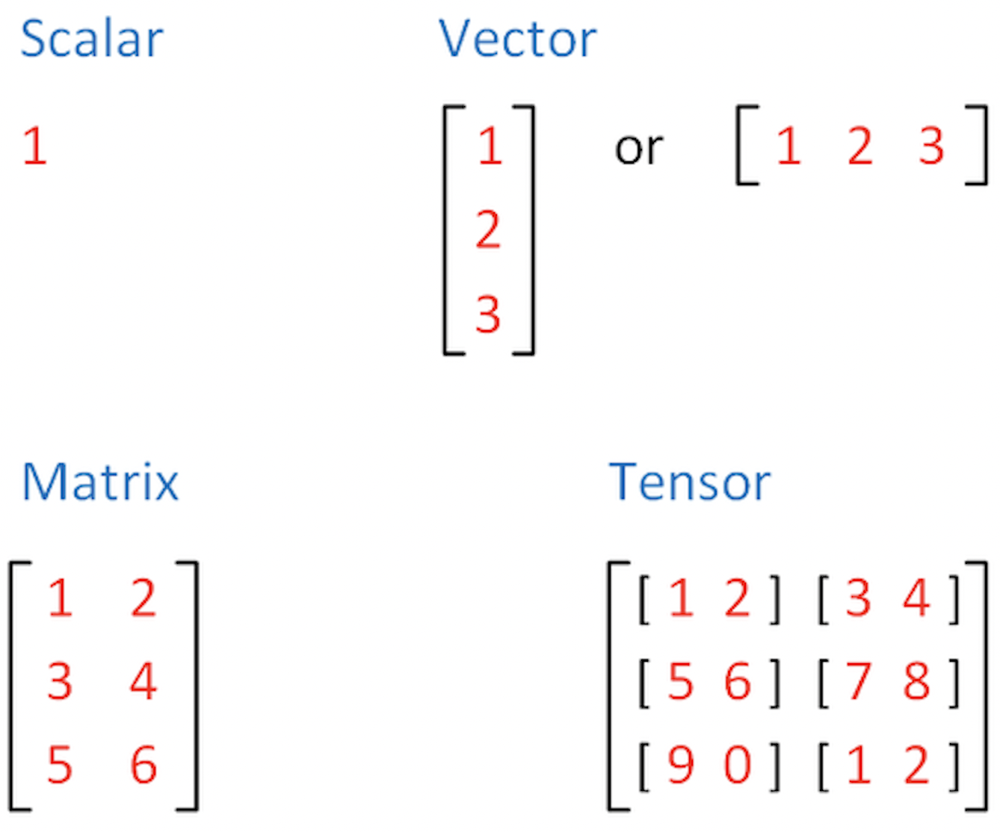

Sheet 2.1: PyTorch essentials#
Author: Michael Franke
This work sheet introduces the very basics of PyTorch. If you want to install PyTorch locally on your machine, follow these instructions. If installed, import the library to make it usable:
import torch
Tensors#
Tensors are the default data structure used for the representation of numbers in PyTorch. In mathematics (algebra), a tensor is a generalization of the concept of a matrix. For our purposes, let’s think of a tensor as basically an \(n\)-dimensional array of numbers.
For example, a single scalar (a single number) is a zero-dimensional array. An \(n\)-dimensional vector is a one-dimensional array of \(n\) numbers. An \(n \times m\) matrix is a two-dimensional array with \(n\) rows and \(m\) columns. All of these -scalars, vectors and matrices- are tensors. But tensors also include even more high-dimensional objects. For instance, an \(k \times n \times m\) tensor is a three-dimensional array, which includes \(k\) matrices, each of which has \(n\) rows and \(m\) columns. And so on.
Full documetation for the torch.Tensor class can be found here:
https://pytorch.org/docs/stable/tensors.html
{width=300px}
Exercise 2.1.1: Dimensions of tensors
What are the dimensions of the following tensors?
\(1\)
\([1,2,3]\)
\([[1,2], [3,4]]\)
\([[1,2], [3,4], [5,6]]\)
\([[[1,2], [3,4], [5,6]]]\)
Click below to see the solution.
Exercise 2.1.1: Dimensions of tensors
What are the dimensions of the following tensors?
\(1\) -> 0 Dimensions
\([1,2,3]\) -> 1 Dimension
\([[1,2], [3,4]]\) -> 2 Dimensions
\([[1,2], [3,4], [5,6]]\) -> 2 Dimensions
\([[[1,2], [3,4], [5,6]]]\) -> 3 Dimensions
Show code cell content
########## Exercise 2.1.1 #################
tensor1 = torch.tensor(1)
tensor2 = torch.tensor([1,2,3])
tensor3 = torch.tensor([[1,2], [3,4]])
tensor4 = torch.tensor([[1,2], [3,4], [5,6]])
tensor5 = torch.tensor([[[1,2], [3,4], [5,6]]])
print(tensor1)
print(tensor2)
print(tensor3)
print(tensor4)
print(tensor5)
# you can use .shape in prder to check the dimensions
print(tensor1.shape)
print(tensor3.shape)
tensor(1)
tensor([1, 2, 3])
tensor([[1, 2],
[3, 4]])
tensor([[1, 2],
[3, 4],
[5, 6]])
tensor([[[1, 2],
[3, 4],
[5, 6]]])
torch.Size([])
torch.Size([2, 2])
Creating a tensor#
There are various ways to create a tensor in PyTorch. We will go through a few examples here.
Tensors can be initialised from a list:
a_list = [1, 2, 3, 4]
tensor_from_list = torch.tensor(a_list)
tensor_from_list
tensor([1, 2, 3, 4])
Or directly:
new_tensor = torch.tensor([1, 2, 3, 4])
new_tensor
tensor([1, 2, 3, 4])
Tensor construction will replicate shape and dimensionality of the data passed to it:
tensor_0d = torch.tensor(1)
tensor_0d
tensor(1)
tensor_2d = torch.tensor([[1, 2, 3], [4, 5, 6]])
tensor_2d
tensor([[1, 2, 3],
[4, 5, 6]])
Tensors can also be constructed from numpy arrays:
import numpy as np
np_array = np.zeros((2, 2))
np_array_to_tensor = torch.tensor(np_array)
np_array_to_tensor
tensor([[0., 0.],
[0., 0.]], dtype=torch.float64)
Or with build-in torch functionality:
zeros = torch.zeros((2, 2))
zeros
tensor([[0., 0.],
[0., 0.]])
ones = torch.ones((2, 3))
ones
tensor([[1., 1., 1.],
[1., 1., 1.]])
filled = torch.full((4, 3), 5)
filled
tensor([[5, 5, 5],
[5, 5, 5],
[5, 5, 5],
[5, 5, 5]])
Often we might also want to fill tensors with random numbers.
The function torch.rand() populates a tensor of the given size with random numbers drawn uniformly from the unit interval.
torch.rand((2, 3))
tensor([[0.6004, 0.1671, 0.2114],
[0.4924, 0.5919, 0.0054]])
Exercise 2.1.2: Creating tensors
Create a PyTorch tensor storing the following matrices:
a. \([[1,2], [3,4], [5,6]]\)
b. \([[[1,2], [3,4], [5,6]], [[10,20], [30,40], [50,60]]]\)
Create a PyTorch tensor of size \(3 \times 2 \times 4\) filled with the number 3.
Create a PyTorch vector with 6 random numbers (lying between 0 and 1).
Click to see the solution.
Show code cell content
########## Exercise 2.1.2 Task 1 #################
exercise1a = torch.tensor([[1,2],[3,4],[5,6]])
print(exercise1a)
exercise1b = torch.tensor([[[1,2],[3,4],[5,6]],[[10,20],[30,40],[50,60]]])
print(exercise1b)
########## Exercise 2.1.2 Task 3 #################
exercise2 = torch.full((3, 2, 4), 3)
print(exercise2)
########## Exercise 2.1.2 Task 3 #################
exercise3 = torch.rand((6))
print(exercise3)
tensor([[1, 2],
[3, 4],
[5, 6]])
tensor([[[ 1, 2],
[ 3, 4],
[ 5, 6]],
[[10, 20],
[30, 40],
[50, 60]]])
tensor([[[3, 3, 3, 3],
[3, 3, 3, 3]],
[[3, 3, 3, 3],
[3, 3, 3, 3]],
[[3, 3, 3, 3],
[3, 3, 3, 3]]])
tensor([1.9025e-01, 4.4543e-01, 7.3338e-04, 8.5581e-01, 3.8884e-01, 2.4922e-02])
Row & column vectors#
A one-dimensional tensor is a row-vector:
row_vector = torch.tensor([1, 10, 100])
print(row_vector)
print(row_vector.size())
tensor([ 1, 10, 100])
torch.Size([3])
Strictly speaking, there are no column vectors in PyTorch. A column vector would be a matrix with one column:
col_vector = torch.tensor([[1], [10], [100]])
print(col_vector)
print(col_vector.size())
tensor([[ 1],
[ 10],
[100]])
torch.Size([3, 1])
Tensor data types#
Tensor-supported data types are:
numeric: float, int
boolean
complex numbers
We can retrieve the type of a tensor with .dtype.
torch.tensor([1.5, 2.1]).dtype
torch.float32
If we construct a tensor with an integer, its type will be integer. Compare:
print(torch.tensor(5).dtype)
print(torch.tensor(5.0).dtype)
torch.int64
torch.float32
It is possible to declare the type explicitly, when constructing a tensor:
print(torch.tensor(5, dtype=torch.float64).dtype)
print(torch.tensor(1.0, dtype=torch.bool).dtype)
torch.float64
torch.bool
All the values in the same tensor are of the same data type.
true = torch.tensor([True, True])
print(true)
print(true.dtype)
tensor([True, True])
torch.bool
Careful: PyTorch will implicitly cast data types.
mix = torch.tensor([True, 1])
print(mix)
print(mix.dtype)
tensor([1, 1])
torch.int64
What about strings? PyTorch tensors have no character or string data type support.
hello = "Hello World!"
hello_tensor = torch.tensor([ord(char) for char in hello])
hello_tensor
tensor([ 72, 101, 108, 108, 111, 32, 87, 111, 114, 108, 100, 33])
NOTE: weights of a language model are, at the end, also represented as tensors. The data type of a tensor determines how much memory the tensor occupies. In the context of a language model, this means that, depending on the data type of the weights, more or less memory (e.g., on the GPU) is required in order to be able to use the model. Note that often weights of pretrained available models (i.e., weights of an already trained model that can be used to predict text) are available in torch.float16. We will see where to see this and how to change the dtype when loading a pretrained model in the next sheets.
Attributes of a tensor#
Tensors have attributes, which store information about some of their important properties. Here are some important examples:
print(f"Datatype of tensor : {hello_tensor.dtype}")
print(f"Shape of tensor : {hello_tensor.shape}")
print(f"Device tensor is stored on : {hello_tensor.device}")
Datatype of tensor : torch.int64
Shape of tensor : torch.Size([12])
Device tensor is stored on : cpu
We have seen dtype already.
The property shape gives equal output as a call to function .size().
The property assessed with .device tells us where the tensor is stored and manipulated.
The default is the CPU.
If your machine allows you can also shift all your tensors to a GPU.
The syntax for doing this is slightly different on different machines.
Exercise 2.1.3: Tensor attributes & types
Inspect the tensor type with
.dtypefor tensors created from a list containing two different data types supported by PyTorch (int, float, Boolean).Use
.shapeor.size()to inspect the shape of a (row) vector, a single column matrix, and a \(2 \times 3\) matrix.
Click below to see the solution.
Show code cell content
########## Exercise 2.1.3 Task 1 and 2 #################
mix = torch.tensor([True, 1])
print(mix)
print(mix.dtype)
print(mix.shape)
mix2 = torch.tensor([True, 1.2])
print(mix2)
print(mix2.dtype)
mix3 = torch.tensor([1, 1.2])
print(mix3)
print(mix3.dtype)
mix4 = torch.tensor([1.2, 1])
print(mix4)
print(mix4.dtype)
mix5 = torch.tensor([1, True])
print(mix5)
print(mix5.dtype)
mix6 = torch.tensor([1.2, True])
print(mix6)
print(mix6.dtype)
mix7 = torch.tensor([[1.2, True],[2, 1.2],[False, 2]])
print(mix7)
print(mix7.dtype)
print(mix7.shape)
mix8 = torch.tensor([[1.2],[2],[False]])
print(mix8)
print(mix8.dtype)
print(mix8.shape)
print(mix8.size())
tensor([1, 1])
torch.int64
torch.Size([2])
tensor([1.0000, 1.2000])
torch.float32
tensor([1.0000, 1.2000])
torch.float32
tensor([1.2000, 1.0000])
torch.float32
tensor([1, 1])
torch.int64
tensor([1.2000, 1.0000])
torch.float32
tensor([[1.2000, 1.0000],
[2.0000, 1.2000],
[0.0000, 2.0000]])
torch.float32
torch.Size([3, 2])
tensor([[1.2000],
[2.0000],
[0.0000]])
torch.float32
torch.Size([3, 1])
torch.Size([3, 1])
Answers Exercise 2.1.3: Tensor attributes & types
You see the code above for both sub-exercises. The datasize importance is as follows: float32 > int64 > bool
Operations on tensors#
Indexing and slicing#
Indexing & slicing works in the way familiar from numpy.
matrix = torch.tensor([[1, 2, 3], [4, 5, 6], [7, 8, 9]])
print(matrix)
print(matrix[1, 2]) # single element
print(matrix[2, :]) # third row
print(matrix[2]) # third row (alternative)
print(matrix[:, 1]) # second column
tensor([[1, 2, 3],
[4, 5, 6],
[7, 8, 9]])
tensor(6)
tensor([7, 8, 9])
tensor([7, 8, 9])
tensor([2, 5, 8])
Joining tensors#
We can concatenate tensor like so:
head = torch.tensor([1, 2, 3])
tail = torch.tensor([4, 5, 6])
head_and_tail = torch.cat([head, tail])
print(head_and_tail)
tensor([1, 2, 3, 4, 5, 6])
What if we want to add a dimension?
print(torch.stack([head, tail]))
tensor([[1, 2, 3],
[4, 5, 6]])
Reshaping#
The function torch.reshape() is a frequently used way of returning a tensor in the
specified shape.
Its input are the desired output dimensions.
NB: the reshaping returns a new tensor and does not modify the old tensor.
tensor_1 = torch.tensor([[1, 2], [3, 4]])
tensor_2 = tensor_1.reshape(4, 1)
print(tensor_1)
print(tensor_2)
tensor([[1, 2],
[3, 4]])
tensor([[1],
[2],
[3],
[4]])
a = torch.tensor([[0, 1], [2, 3]])
b = torch.reshape(a, (-1,)) # to (row) vector
c = torch.reshape(a, (-1, 1)) # to one col matrix (~ col vector)
d = torch.reshape(a, (1, -1)) # to one row matrix
print(a)
print(b)
print(c)
print(d)
tensor([[0, 1],
[2, 3]])
tensor([0, 1, 2, 3])
tensor([[0],
[1],
[2],
[3]])
tensor([[0, 1, 2, 3]])
There are also the functions .squeeze() and .unsqueeze() that remove or add the dimension of size 1 at a given location of a tensor:
e = b.unsqueeze(1)
print(e)
f = e.unsqueeze(0)
print(f)
# we can remove dimension of size 1 at a given position
print(f.squeeze(0))
# or remove all dimensions of size 1
print(f.squeeze())
tensor([[0],
[1],
[2],
[3]])
tensor([[[0],
[1],
[2],
[3]]])
tensor([[0],
[1],
[2],
[3]])
tensor([0, 1, 2, 3])
There is also the function .flatten() which returns all elements of a tensor.
a = torch.tensor([[[0, 1], [2, 3]], [[4, 5], [6, 7]]])
print(a)
print(torch.flatten(a))
tensor([[[0, 1],
[2, 3]],
[[4, 5],
[6, 7]]])
tensor([0, 1, 2, 3, 4, 5, 6, 7])
Transposing#
It is possible to transpose a tensor (with a dimension at least 2) by specified dimesions using the
function: torch.transpose(),
This function takes the dimensions which are to be transposed as an argument.
tensor_1 = torch.tensor(
[[[10, 20, 30], [40, 50, 60], [70, 80, 90]], [[1, 2, 3], [4, 5, 6], [7, 8, 9]]]
)
tensor_1_transpose = torch.transpose(tensor_1, 1, 2)
print(tensor_1)
print(tensor_1_transpose)
tensor([[[10, 20, 30],
[40, 50, 60],
[70, 80, 90]],
[[ 1, 2, 3],
[ 4, 5, 6],
[ 7, 8, 9]]])
tensor([[[10, 40, 70],
[20, 50, 80],
[30, 60, 90]],
[[ 1, 4, 7],
[ 2, 5, 8],
[ 3, 6, 9]]])
Tensor arithmetic#
The usual infix notation for arithmetic functions works element-wise on tensors:
x = torch.tensor([1, 2, 3])
y = torch.tensor([1, 4, 8])
print(x + y)
print(x - y)
print(x * y)
print(x / y)
print(y**x)
tensor([ 2, 6, 11])
tensor([ 0, -2, -5])
tensor([ 1, 8, 24])
tensor([1.0000, 0.5000, 0.3750])
tensor([ 1, 16, 512])
Broadcasting#
When we apply these operations to tensors of different sizes, PyTorch will try to broadcast the input.
For example, if we multiply a vector with a scalar, the scalar is broadcasted (extended) to a vector of the same length. The result is that each element in the vector is multiplied by that scalar.
x = torch.tensor([1, 2, 3])
print(x * 4)
tensor([ 4, 8, 12])
Similarly, for higher dimensions. With the usual arithmetic operations, a row vector will be recycled in the obvious way.
row_vector = torch.tensor([1, 10])
matrix = torch.tensor([[1, 2], [3, 4]])
print("multiplication:\n", matrix * row_vector)
multiplication:
tensor([[ 1, 20],
[ 3, 40]])
print("division:\n", matrix / row_vector)
division:
tensor([[1.0000, 0.2000],
[3.0000, 0.4000]])
print("addition:\n", matrix + row_vector)
print("subtraction:\n", matrix - row_vector)
addition:
tensor([[ 2, 12],
[ 4, 14]])
subtraction:
tensor([[ 0, -8],
[ 2, -6]])
The precise documentation of broadcasting is here.
Matrix Multiplication#
To perform a matrix multiplications on tensors, we use the function
torch.matmul(tensor1, tensor2), or its short-form notation tensor1 @ tensor2.
If tensor1 is an \((n×m)\) tensor, and tensor2 is an \((m×p)\) tensor, the
output will be an \((n×p)\) tensor.
tensor1 = torch.tensor([[1, 2], [3, 4], [5, 6]])
tensor2 = torch.tensor([[10, 0], [1, 100]])
print(torch.matmul(tensor1, tensor2))
print(tensor1 @ tensor2)
tensor([[ 12, 200],
[ 34, 400],
[ 56, 600]])
tensor([[ 12, 200],
[ 34, 400],
[ 56, 600]])
Notice that the function torch.matmul() implicitly converts and broadcasts and so also flexibly applies yields a matrix-vector product or a dot products.
matrix = torch.tensor([[1, 2], [3, 4], [5, 6]])
vector = torch.tensor([1, 10])
print(matrix)
print(vector)
print(matrix @ vector) # matrix-vector product
print(vector @ vector) # dot prodcut
tensor([[1, 2],
[3, 4],
[5, 6]])
tensor([ 1, 10])
tensor([21, 43, 65])
tensor(101)
Full documentation of torch.matmul() is here.
Assessing just the values of a tensor#
The tensor.item() function returns the value of a single-item tensor without any further information, which is often useful for inspection or plotting of results:
tensor = torch.tensor([[1, 2], [3, 4], [5, 6]])
print(tensor[1, 1])
print(tensor[1, 1].item())
tensor(4)
4
To convert a larger tensor back to numpy (e.g., for plotting) you can do this:
another_tensor = torch.tensor([[1, 2, 3], [4, 5, 6]])
another_tensor.detach().numpy()
array([[1, 2, 3],
[4, 5, 6]])
Exercise 2.1.4: Operations on tensors
Define a tensor for matrix \([[[1,2], [3,4], [5,6]]]\). Create new tensors obtained by reshaping this matrix into (1) a vector (row vector), (2) a one-column matrix. Also, create its transpose. TODO: define two step solution with reshape -1
Compute the dot product between \([1,3,5]\) and \([1,10,100]\).
Compute the matrix product between PyTorch tensors \([[1], [2], [3]]\) and \([[1,10,100]]\). Convert the result to a numpy array.
Click below to see the solution.
Show code cell content
########## Exercise 2.1.4 Task 1 #################
ex1 = torch.tensor([[[1,2],[3,4],[5,6]]])
print(ex1)
# 1
ex1_row = torch.flatten(ex1)
print(ex1_row)
# 2
ex1_col = torch.reshape(ex1, (-1, 1))
print(ex1_col)
ex1_col_trans = torch.transpose(ex1_col, 0, -1)
print(ex1_col_trans)
########## Exercise 2.1.4 Task 2 #################
torch1 = torch.tensor([1,3,5])
torch2 = torch.tensor([1,10,100])
dot = torch1 @ torch2
print(dot)
########## Exercise 2.1.4 Task 3 #################
matrix1 = torch.tensor([[1],[2],[3]])
matrix2 = torch.tensor([[1,10,100]])
matrixProd = matrix1 @matrix2
print(matrixProd.numpy())
tensor([[[1, 2],
[3, 4],
[5, 6]]])
tensor([1, 2, 3, 4, 5, 6])
tensor([[1],
[2],
[3],
[4],
[5],
[6]])
tensor([[1, 2, 3, 4, 5, 6]])
tensor(531)
[[ 1 10 100]
[ 2 20 200]
[ 3 30 300]]